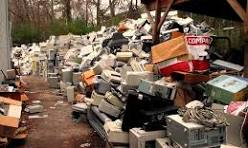
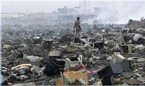

Consecuencias de la obsolescencia programada
- AUMENTO DE RESIDUOS: Mayor cantidad de productos desechados.

- MAYOR CONSUMO DE RECURSOS: Mayor extracción de materias primas y energía para fabricar productos nuevos.

- IIMPACTO ECONOMICO: Costos de reemplazo de productos más frecuentes y pérdida de valor de los mismos.
Video “La obsolescencia programada y el consumismo - Retina”